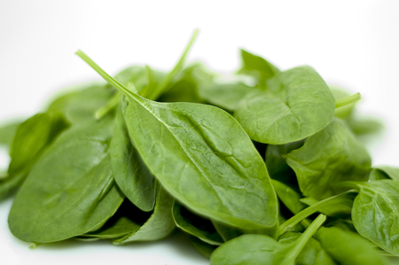

春回大地，乍暖还寒，饮食调理尤为重要，多吃时令蔬菜是养生基本。对女性来说，吃对蔬菜可以延缓衰老、美丽动人。虽说萝卜青菜各有所爱，但同为蔬菜，营养价值也是不尽相同。那么哪些蔬菜该多吃，哪些要少吃？美国福克斯新闻网揭示：女性春季吃蔬菜要“四多三少”。

四种蔬菜最养女人
1、菠菜
菠菜是最百搭的蔬菜之一，可生吃、蒸、炒、炖。菠菜中含有大量的营养物质，比如维生素K、维生素C、钾、叶黄素和强抗氧化剂，有助于增强心脏和肌肉，具有抗衰老，增强青春活力的作用。其中的纤维素还可助消化。此外，菠菜富含铁、叶酸等，有助于孕妇保胎安胎。
2、西红柿
西红柿营养丰富，其所含的维生素C、A可与水果媲美。而维生素A家族中的番茄红素是一种强有力的抗氧化剂，因而对女性来说是具有独特的保健功能。
3、花椰菜
花椰菜含有丰富的植物蛋白、维生素C、B和K等，可抗癌防病。作为“百搭小能手”，花椰菜与面食、鸡肉、鱼肉等均能搭配。
4、羽衣甘蓝
卷心菜是日常餐桌上很常见的一种蔬菜，而羽衣甘蓝则是不卷心的卷心菜，是卷心菜的园艺变种。羽衣甘蓝还有很好的食用功效，所含的维生素K、纤维素等，对肌肉、心脏和免疫系统都非常有益，被誉为对人体最好的蔬菜。

三种蔬菜营养价值不高
尽管多数蔬菜都能提供较高的营养价值，但有些则不然，其中所含的营养成分有限。
1、黄瓜。
黄瓜的含水量高，是很多女性的美容小帮手，而除了富含维生素K，其他营养成分不多。
2、茄子。
茄子被视为可代替肉类的蔬菜，但其实除了其中含有的纤维素外，营养价值并不高。
而维生素A的主要功能之一就是维持正常的视觉功能，这也是为什么多吃秋刀鱼可以预防夜盲症的原因。
3、水萝卜。
它颜色鲜艳、味道独特，还包含少量维生素C，不过其营养价值也仅此而已。